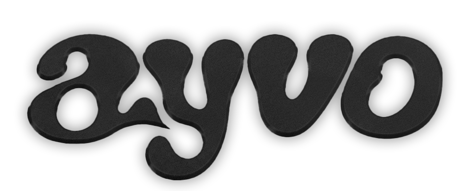
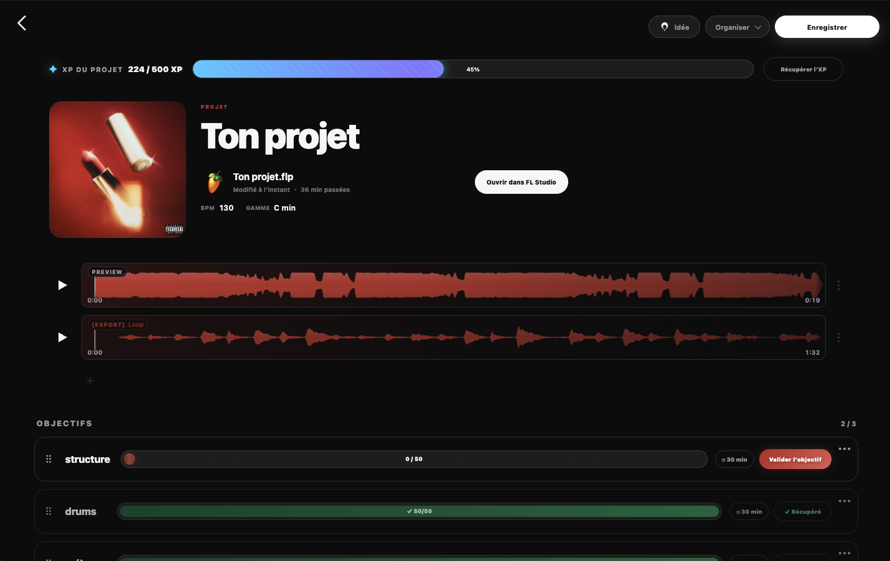
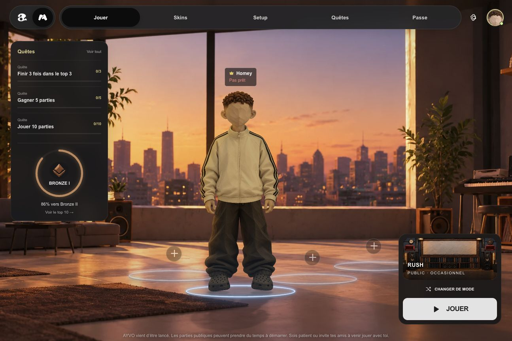
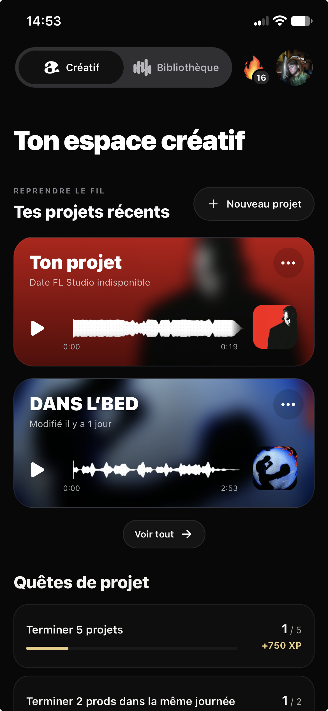
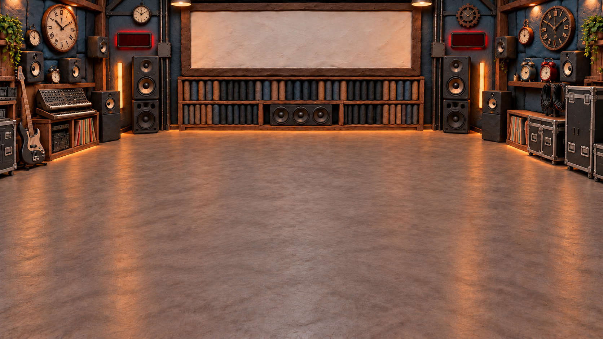
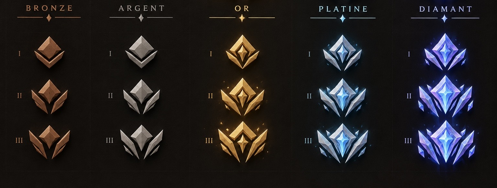

Crée depuis AYVO.
Crée un projet FL Studio ou importe un .flp existant. Un clic depuis sa fiche, et tu retrouves ton studio.

TON UNIVERS DE BEATMAKER
De ta prochaine idée à ta prochaine victoire.
Un espace pour tes projets.
Un terrain de jeu pour ta créativité.
Et ta musique, toujours avec toi.

Tes idées prennent forme.
Ta créativité entre en jeu.01 — CRÉATIF
Moins chercher. Plus composer.Ton projet ne se résume pas à un fichier .flp. AYVO réunit ce qui l’entoure : tes idées, tes versions, tes objectifs et les heures que tu y consacres.
Retrouve tes projets récents dès l’accueil, écoute leur dernière version de travail et reprends là où tu en étais. Tes quêtes créatives t’accompagnent pour garder le rythme.
Crée un projet FL Studio ou importe un .flp existant. Un clic depuis sa fiche, et tu retrouves ton studio.
Travaille dans FL Studio comme d’habitude. Ton projet et ses exports restent rangés dans leurs dossiers sur ton ordinateur.
Quand tu quittes FL Studio, AYVO prépare une preview de travail et la synchronise sur ton compte. Prête à réécouter dès qu’elle est envoyée.
FL Studio, pour commencer. Ableton Live et Logic Pro arriveront plus tard.
DU STUDIO À TA POCHE
Tu quittes ton projet dans FL Studio sur ton ordinateur : AYVO en prépare une version de travail et la synchronise sur ton téléphone. Réécoute-la pendant une pause dans la journée, sur le trajet du retour ou le soir avant de dormir. Ta dernière session, toujours à portée de main.
Une idée te vient ? Capture-la sur ton téléphone, n’importe où, à n’importe quel moment : une note vocale, quelques mots, une inspiration Spotify ou Deezer, des images dans un moodboard… Retrouve tout sur ton ordinateur quand tu te remets à composer.
Découvrir les versions mobile et ordinateur
CHAQUE SON A SA PLACE
Une loop de départ, une acapella, un mix à comparer, le morceau terminé. Garde le fil, sans perdre une bonne version en route.
Envoie une preview ou une prod par lien ou QR code. Pour transmettre le projet, prépare un pack avec son .flp et les samples utilisés.
La version de travail pour réécouter ton avancée.
Loops, acapellas et audios de départ, à retrouver dans la fiche.
Ajoute une loop exportée ou plusieurs versions de ta prod.
Garde tes exports finaux et retrouve-les dans ta bibliothèque.
Regroupe les projets par artiste, envie ou collaboration. Retrouve vite le morceau sur lequel tu veux avancer.
Tes prods exportées rejoignent la bibliothèque. Range-les en packs, réécoute-les et partage-les depuis tes appareils.
Fixe tes objectifs dans le projet et retrouve tes sessions : quand tu as composé, pendant combien de temps, et le temps total passé.
02 — AYVO LEAGUE
Le jeu se passe sur ordinateur.Un chrono, une image, une loop à échanger… Retrouve d’autres beatmakers en ligne et sors de tes habitudes. Même passion. Nouvelles façons de créer.
Choisis ta contrainte.
Fais-en ta meilleure idée.

Quinze minutes pour passer de la page blanche au morceau. Fais des choix, avance et découvre ce que tu peux créer quand chaque minute compte.
Une prod complète. Un temps limité.Un projet terminé. Un défi relevé. Une place sur le podium. Ta progression continue entre création et jeu.
PARTIES CLASSÉES
Du Bronze à Légende AYVO, avance au fil de tes résultats. Ton emblème et son cercle de progression montrent le chemin parcouru.

QUÊTES & XP
Termine tes projets et relève des quêtes créatives ou de jeu. Gagne de l’XP, monte de niveau et prépare la suite.
TON PERSONNAGE. TON STYLE.
Cheveux, teint, vêtements, accessoires : compose ton skin et retrouve-le dans le lobby et les parties.
Un passe et de nouvelles récompenses viendront prolonger l’aventure. Pour l’instant, ta progression commence déjà.
AVANT DE TE LANCER
Non. Tu composes dans FL Studio. AYVO ouvre et organise tes projets, rassemble leurs audios, suit tes sessions et te permet de retrouver ta musique sur tes autres appareils. Ableton Live et Logic Pro sont prévus plus tard.
Le projet FL Studio et ses dossiers de travail sont locaux. Les previews et exports synchronisés sur ton compte sont ceux que tu peux retrouver sur téléphone. La synchronisation nécessite une connexion et le temps d’envoi de l’audio.
Tes projets, tes idées, tes previews, tes exports, la bibliothèque et tes quêtes de projet. AYVO League et l’ouverture de FL Studio sont réservés à l’ordinateur.
Oui. Le mode groupe permet de jouer avec ses membres. Une partie privée possède aussi un code à partager, y compris avec quelqu’un qui n’est pas encore dans tes amis.
À TOI DE CRÉER LA SUITE
Ordinateur + téléphone. Un même compte.Crée et joue sur ordinateur. Retrouve ta musique sur téléphone.
Tes projets et ta musique
Tes projets et ta musique
Les installateurs Mac et Windows donnent accès à la dernière version disponible. Les versions mobile arrivent bientôt.